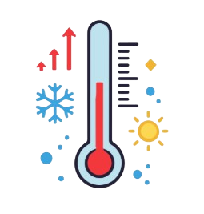
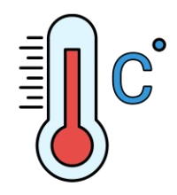
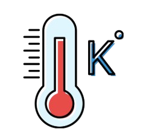

Práctica de Conversión de Temperaturas:
_______________________________________
Convertidor de Temperatura:
¡Bienvenid@! Ingresa una temperatura en grados Celsius y deja que el conversor haga el resto. En un instante conocerás su valor en Fahrenheit y Kelvin.
Por favor ingrese la temperatura en Grados Celsius:
Resultados de la Conversión:

°C
---
°F
---

K
---